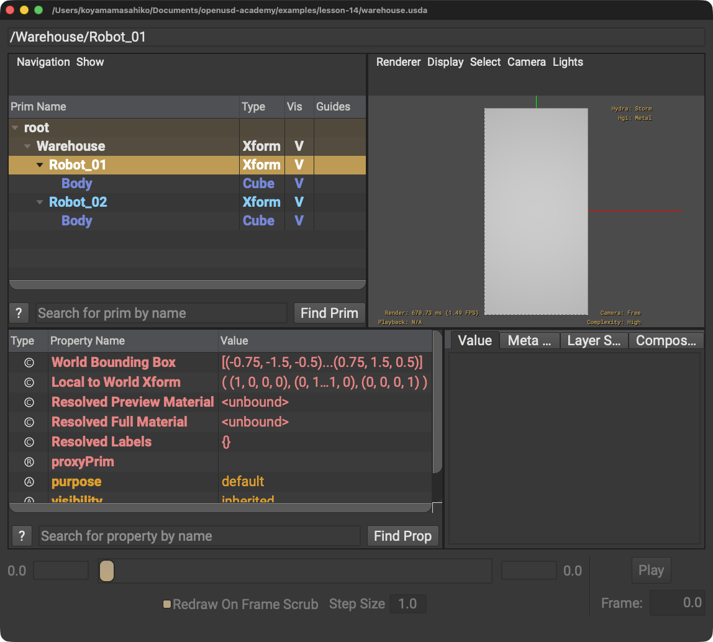

データ交換
入力とOpenUSDのデータモデルを比較し、損失や単位差を明示します。
LESSON 14 · PIPELINES
抽出・変換・検証・Instancingを一つの流れにします
今日これだけ
公式情報に基づく説明
Data Exchangeは異なるデータモデル間で情報を移します。Extractionで入力のGeometryやMaterialを読み、MappingでOpenUSDのSchemaとPropertyへ対応させ、Transformationで目的の構造へ変え、Validationで規則を確認します。Scenegraph InstancingはComposition Arcから共有Prototypeを暗黙に作り、Point InstancingはSchemaでPrototypeを明示しInstanceをindexで扱います。
Diagram
USDA
#usda 1.0
def Xform "Warehouse"
{
def "Robot_01" (
prepend references = @./Robot.usda@</Robot>
instanceable = true
)
{
}
def "Robot_02" (
prepend references = @./Robot.usda@</Robot>
instanceable = true
)
{
}
}referencesが共有元へのComposition Arc、instanceableがPrim Metadataです。trueは真偽値、@ @はAsset Path、引用符はPrim名です。

Robot_01とRobot_02は青字のInstanceとして表示され、どちらも共有Prototype由来のBodyを持ちます。Python
from pxr import Usd, Sdf
stage = Usd.Stage.CreateNew("warehouse.usda")
stage.DefinePrim("/Warehouse", "Xform")
for name in ("Robot_01", "Robot_02"):
robot = stage.DefinePrim("/Warehouse/" + name)
robot.GetReferences().AddReference("./Robot.usda", Sdf.Path("/Robot"))
robot.SetInstanceable(True)
stage.Save()forは二つの名前を順に処理します。コロン後のインデントが繰り返す範囲、+はPath文字列をつなぐ記号です。TrueはPythonの真偽値です。
USDA → Python mapping
USDA
prepend references = @./Robot.usda@</Robot>↓Python
AddReference("./Robot.usda", Sdf.Path("/Robot"))USDA
instanceable = true↓Python
robot.SetInstanceable(True)Chapter map
入力とOpenUSDのデータモデルを比較し、損失や単位差を明示します。
形状・法線・UV・Material割り当てなどを入力から読み、対応表を作ります。
Path・Schema・階層を変換し、必須PrimやProperty、値域、参照切れを確認します。
Compositionベースです。InstanceはPathで識別され、instance proxyは読み取り専用です。
Schemaベースです。明示したPrototypeを多数のindex付きInstanceで使い、葉や群衆のような大量配置に向きます。
Beginner notes
公式: AddReference()は既定でprependのList Editを記述します。この例はRobot.usda内の/Robotを明示しています。参照先Prim Pathを省くなら、参照先Layerに有効なdefaultPrimが必要です。
よくある間違い
原因: 構文だけを確認しています。
解決策: 階層、Schema、単位、Material割り当ても検証します。
原因: instance proxyは読み取り専用です。
解決策: Instance root、元Asset、Variantなど適切な場所へOpinionを書きます。
Glossary
Official references
確認日: